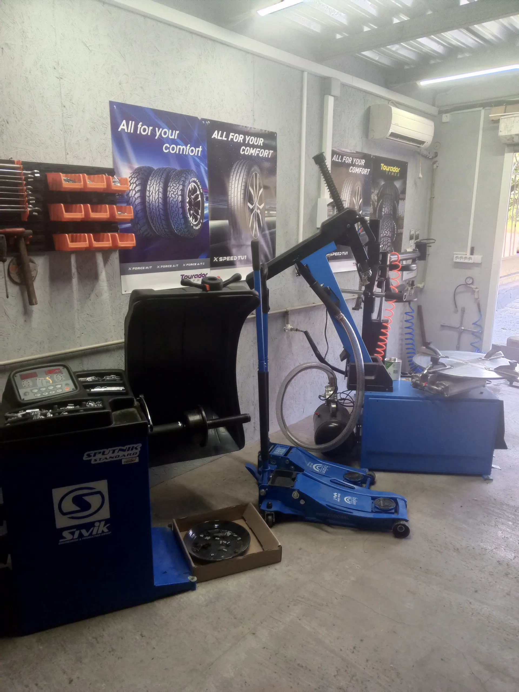
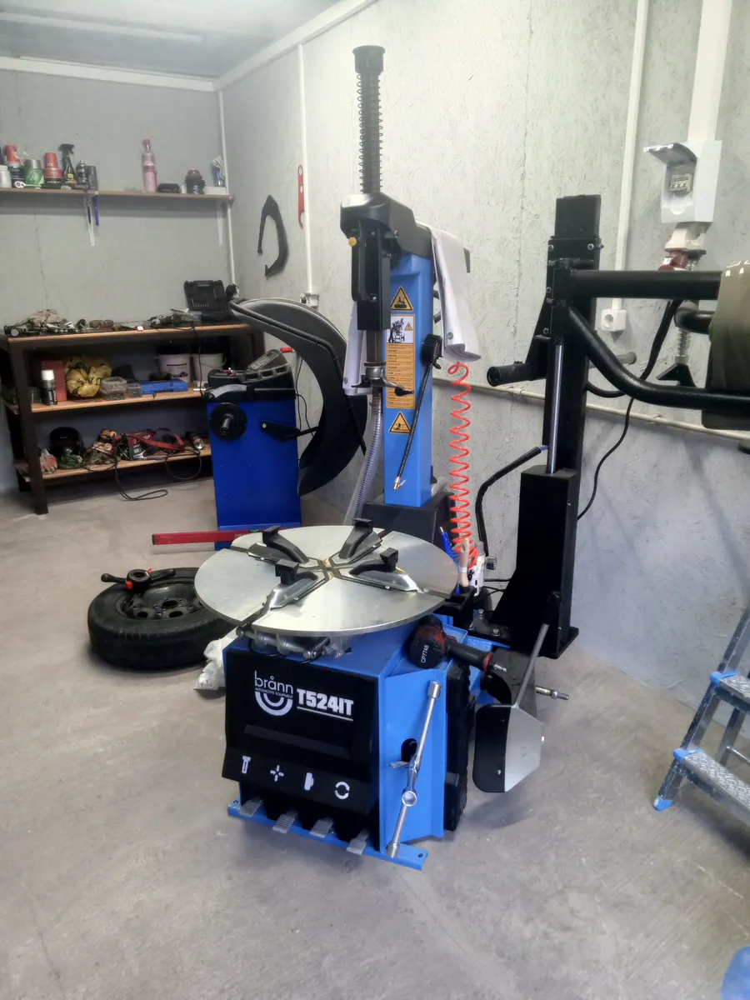
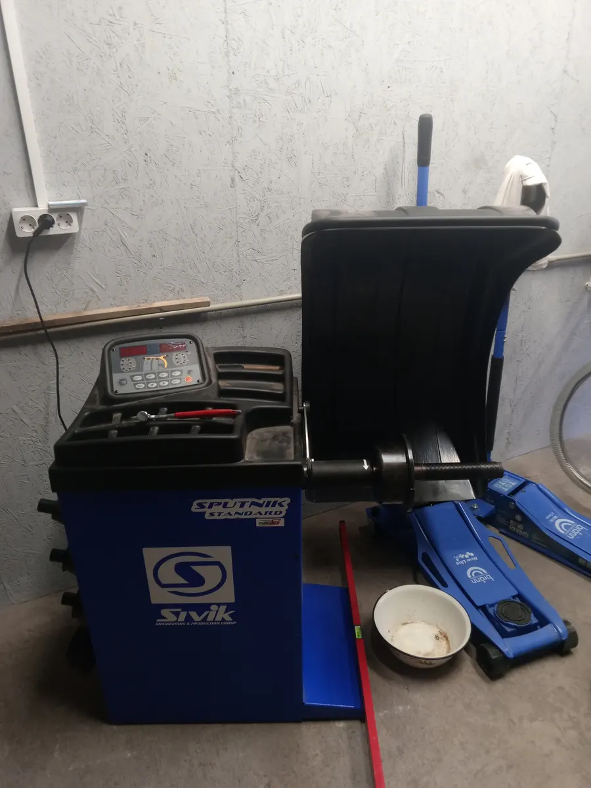
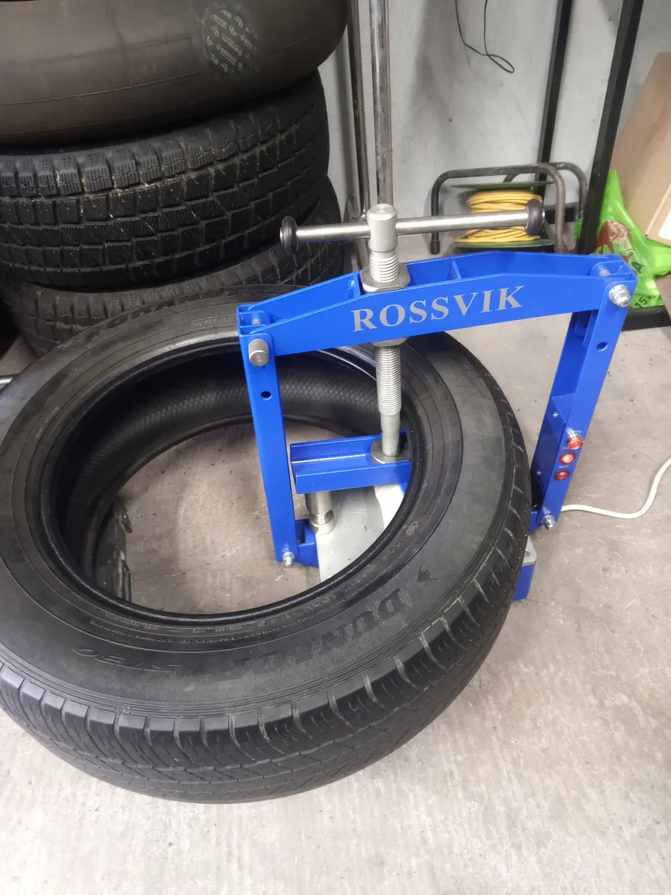

Шиномонтаж · Дагомыс, Сочи
Шиномонтаж в Дагомысе с записью на удобное время
Выберите услугу, день и время – запись уйдёт мастеру в WhatsApp. Армавирская, 131, каждый день с 9:00 до 20:00.
- Каждый день 09:00–20:00
- Выездной шиномонтаж и хранение шин
- Диски кованые, литые, штампованные

Цены
Цены с карточки на Яндекс Картах. Где стоит «уточнить» – спросите в WhatsApp при записи.
Шиномонтаж
- Переобувка комплектауточнить
- Балансировкауточнить
- Ремонт проколовжгут, латка или грибокот 350 ₽
Другие услуги
- Сезонное хранение шинуточнить
- Выездной шиномонтажуточнить
- Утилизация шинуточнить
Оплата наличными или картой.
Как записаться
- 01
Выберите услугу, день и время
В форме вверху страницы.
- 02
Отправьте запись в WhatsApp
Сообщение уже собрано – остаётся нажать «Отправить».
- 03
Ответ придёт в тот же чат
Если время занято, договоритесь о другом там же.
- 04
Приезжайте на Армавирскую, 131
Дагомыс, каждый день с 9:00 до 20:00.



Что здесь делают
Предварительная запись
Время можно выбрать заранее – в форме на сайте или в WhatsApp.
Вулканизация и ремонт проколов
Жгут, латка или грибок – по повреждению.
Выездной шиномонтаж
Куда и когда сможете приехать – уточните в WhatsApp.
Хранение и утилизация шин
Сезонный комплект можно оставить, старые шины – сдать на утилизацию.
Отзывы с Яндекс.Карт
«прекрасный мастер, очень оперативно и качественно всё сделал, ещё и колеса всё подкачал, позаботился, что скоро будет прохладно и всё за какие-то смешные 400 рублей. а! ещё и предложил кофе сварить, чтоб мы не ходили далеко. очень рекомендую, интеллигентный,быстрый, умелый»
Даша Зеленина · 22 сентября 2025
«Благодарю специалиста в своем проф деле Владимира, мне очень повезло, что меня не бортонули под конец рабочего дня еще и в дождливую погоду , так как я потратила время в другом авто сервисе где мне не смогли даже болты скрутить на дисках, Владимир взялся за мои сложные диски и профессионально сменил мне шины!!! Процветание вашему бизнесу и всех благ!!!»
Ася Фасолян · 7 декабря 2025
«Отличный шиномонтаж, все ребята добрые, отзывчивые, дают реальные отзывы и комментарии! Делают своё дело на 200 % Теперь это наш постоянный шиномонтаж, который можно без стыда рекомендовать людям! Большое спасибо!»
Арина Харченко · 10 мая
Отзывы с карточки на Яндекс.Картах, без правок.
Частые вопросы
Можно записаться заранее?
Да. Выберите услугу, день и время в форме вверху страницы – готовое сообщение откроется в WhatsApp.
Сколько стоит переобувка?
Цена зависит от радиуса и дисков. Напишите в WhatsApp размер колёс – назовём стоимость.
Можно оставить шины на хранение?
Да, хранение шин есть. Стоимость уточните в WhatsApp.
Как оплатить?
Наличными или картой.
Запишитесь на удобное время
- Адрес
- пгт Дагомыс, Армавирская улица, 131, Сочи
- Часы
- Каждый день 09:00–20:00
- Телефон
- +7 (918) 080-59-94